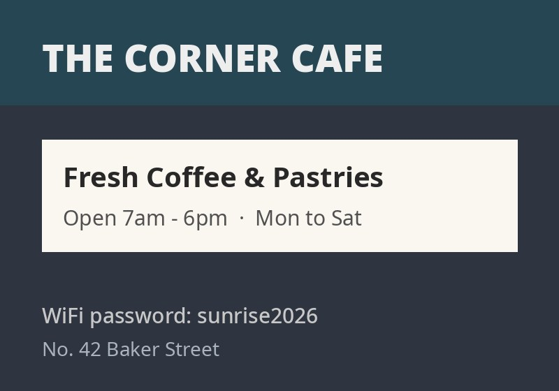
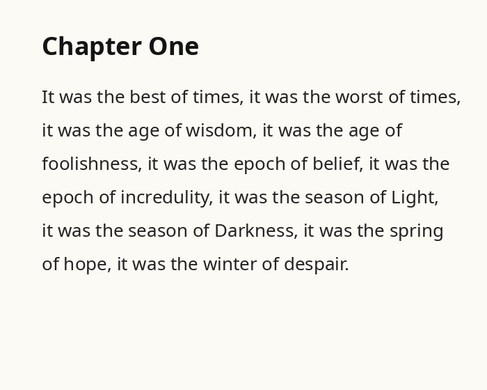

Detection finds where the text is; recognition reads what it says.
This chains both on-device: CRAFT boxes every word, then TrOCR
transcribes each tight crop. Cropping to one word first is exactly what a single-line OCR model
wants — cleaner input, better reads.
Run it
Loads two models: the ~83 MB CRAFT detector (auto) and, on first run, TrOCR (~185 MB, q8). Both run locally.


Drop / choose your own image
reads up to 8 words (top-to-bottom)
Read text
– wordsdetect –read –
Both models run in the browser — the image and the transcription never leave the tab. TrOCR is a single-line recogniser, so it reads best when CRAFT hands it one tight word crop at a time.
Why two models beat one
An end-to-end OCR model has to find and read in one shot. Splitting the job lets each
model be small and good at one thing: CRAFT localises words with its character-affinity maps, and
TrOCR — which only knows how to read a single tight line — gets exactly the input it's best at.
That's how production OCR pipelines (PaddleOCR, docTR, EasyOCR) are built: detect, then
recognise.